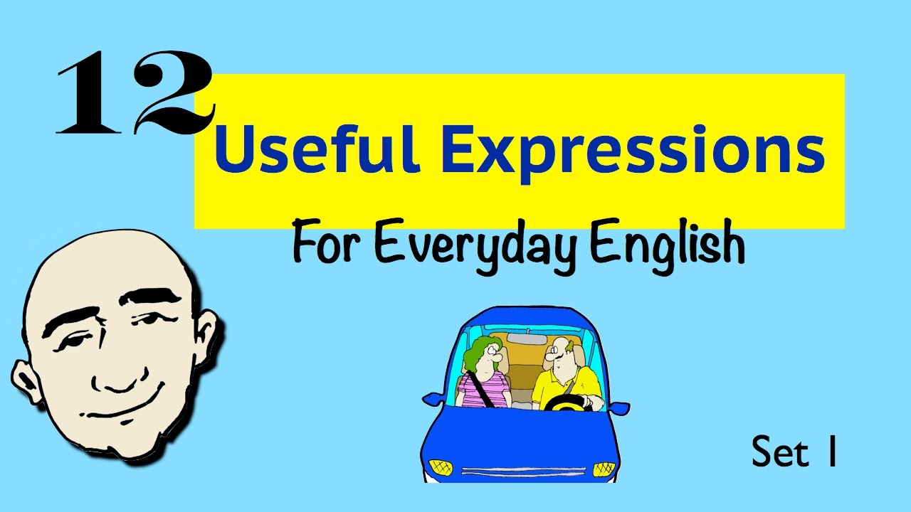

۵ عبارت رایج در گفتوگوی روزمره انگلیسی

یکی از رازهای تسلط در مکالمه انگلیسی، آشنایی با عبارتهای پرکاربرد است؛ جملههایی که انگلیسیزبانها روزانه بهطور طبیعی از آنها استفاده میکنند. یادگیری این عبارات باعث میشود صحبتهایتان طبیعیتر و روانتر به نظر برسد. در ادامه ۵ عبارت پرکاربرد را همراه با معنی و مثال بررسی میکنیم. ۱. What’s up? به معنی "چه خبر؟" یا "چطوری؟" است و برای احوالپرسی دوستانه استفاده میشود. 👂 مثال: Hey Sarah, what’s up? "Hi! Not much, just studying for my exam." ۲. Take your time یعنی "عجله نکن" یا "با حوصله انجام بده". 👂 مثال: You don’t need to rush. Take your time and finish it properly. ۳. I’m just kidding به معنی "شوخی کردم" است و برای مواقعی به کار میرود که نمیخواهیم حرفمان جدی گرفته شود. 👂 مثال: You look terrible today! What?! Relax, I’m just kidding! ۴. Long time no see عبارتی دوستانه برای زمانی است که مدت زیادی کسی را ندیدهاید. 👂 مثال: Hey Tom! Long time no see! Yeah, it’s been ages! ۵. That’s awesome! به معنی "عالیه!" یا "محشره!" است و برای ابراز هیجان یا تحسین استفاده میشود. 👂 مثال: I got the job I wanted! That’s awesome! Congratulations! نکته: وقتی از این عبارتها استفاده میکنید، تلاش کنید لحن طبیعی داشته باشید. مثلاً در گفتوگوی دوستانه میتوانید با بالا بردن آهنگ صدا در آخر جمله، هیجان را نشان دهید. جمعبندی: یادگیری عبارتهای روزمره مثل اینها، مسیر یادگیری زبان را لذتبخشتر میکند. هر روز فقط یکی از این عبارتها را انتخاب کنید و در مکالمه روزانهتان استفاده کنید. بهزودی میبینید که انگلیسی برایتان طبیعیتر شده است.
دیدگاهها
دیدگاهتان را بنویسید